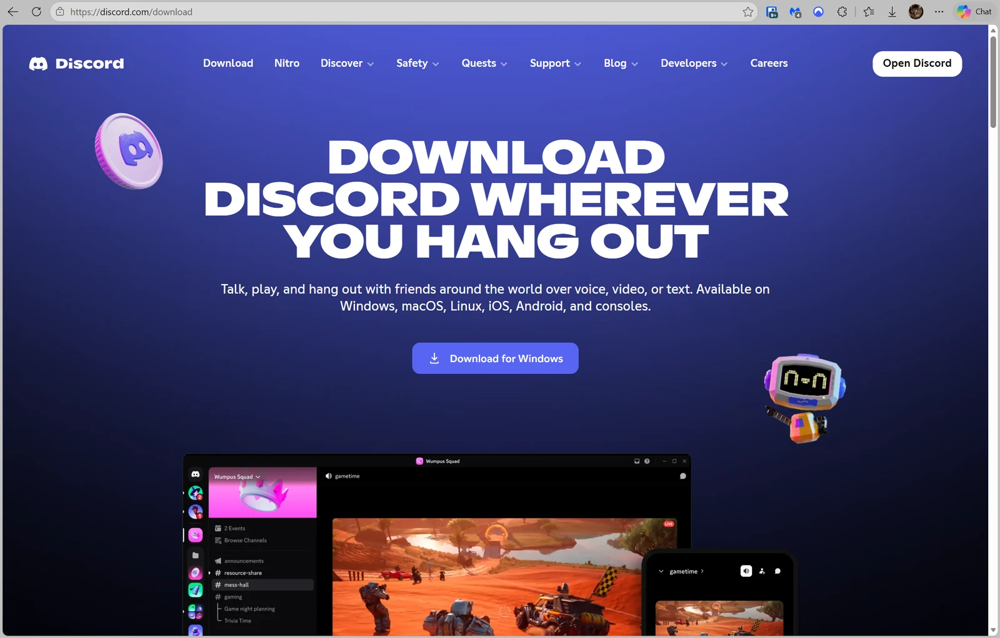
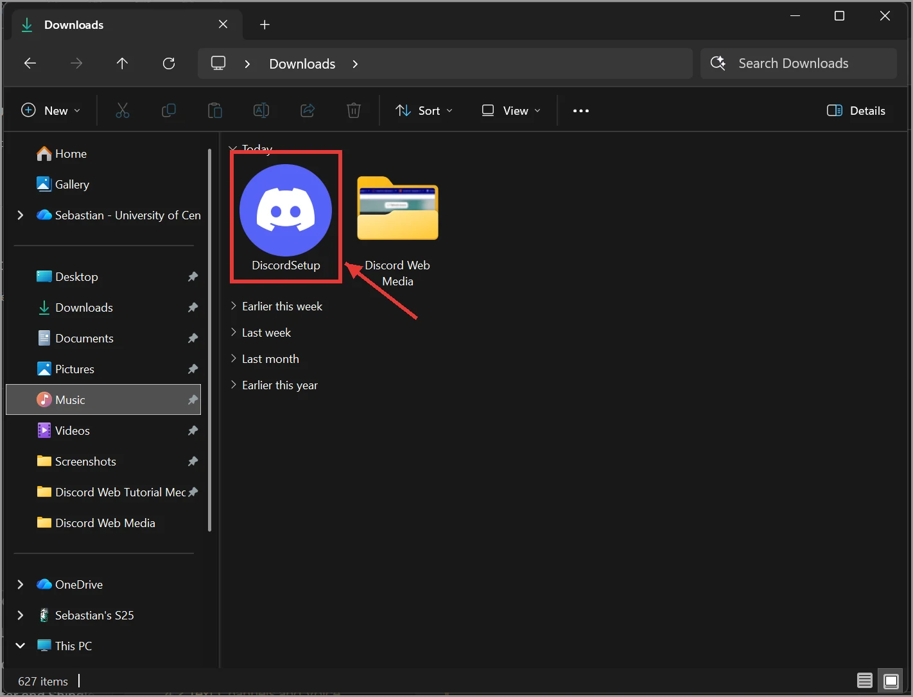
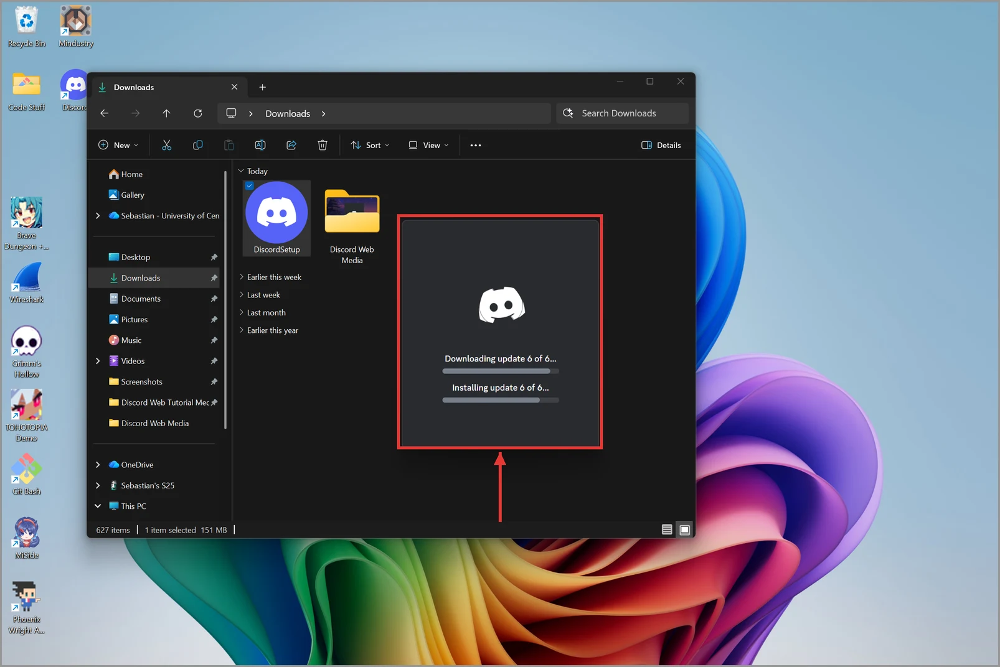

2.1 Downloading the Desktop App
The desktop app is the most complete version of Discord and the version this tutorial uses. Installing it takes about five minutes.
Install Discord on Windows
- Open your web browser and go to discord.com/download.

Figure 2.1.1: Typing discord.com/download into the web browser address bar - Click Download for Windows.

Figure 2.1.2: The Download for Windows button on the Discord download page - Open the file DiscordSetup.exe from your Downloads folder.

Figure 2.1.3: The DiscordSetup.exe file in the Downloads folder - Wait while Discord installs. The app opens on its own when it finishes.

Figure 2.1.4: The Discord installer window while the app installs
Result: The Discord login screen appears, and a Discord shortcut is added to your Start menu.